Before: fa55ce8b439a9825e5e9eac34871fd5330344799. Original PNGs 3440 × 1440. Controlled pairs share the same inspection camera, light, exposure and environment. Authored camera context is marked separately because the new opt-in assembly prefix has a new camera path. No image postprocessing. Review chrome is hidden identically.
Controlled camera comparison · progress 0.2
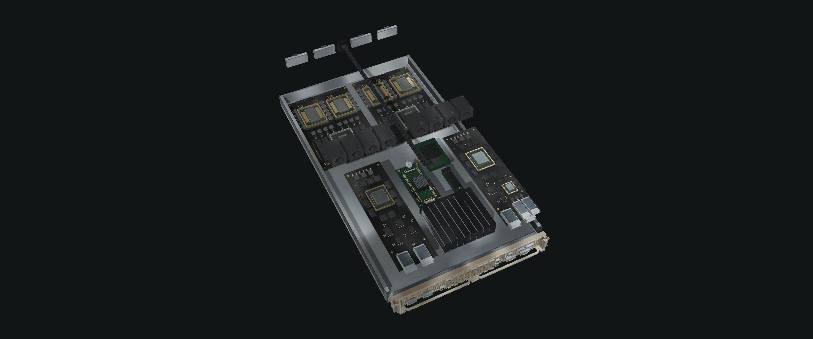
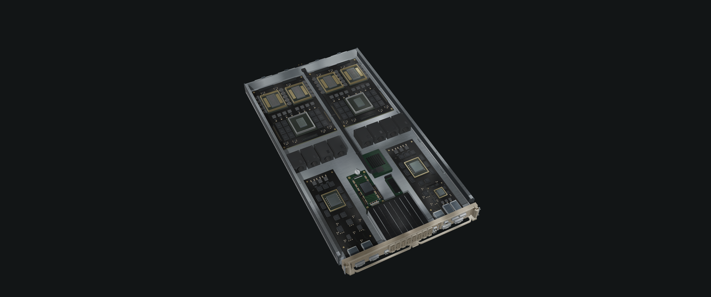
Controlled camera comparison · progress 0.225
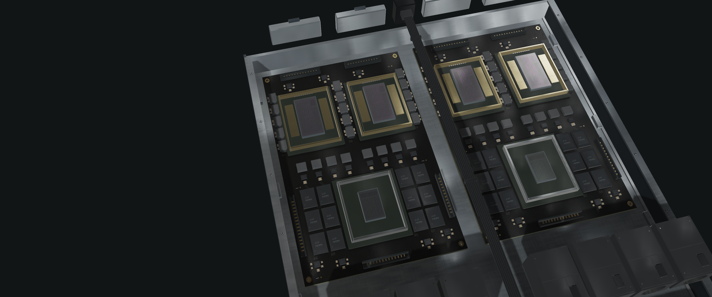
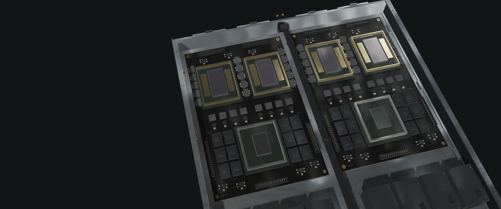
Controlled camera comparison · progress 0.263
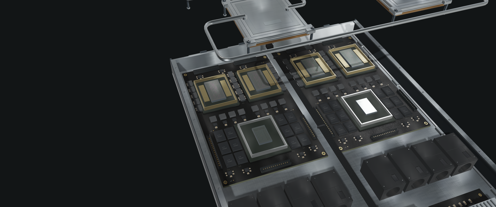
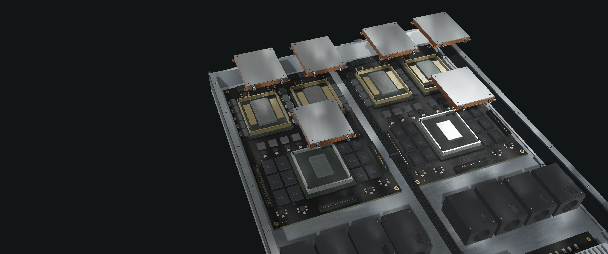
Controlled camera comparison · progress 0.284
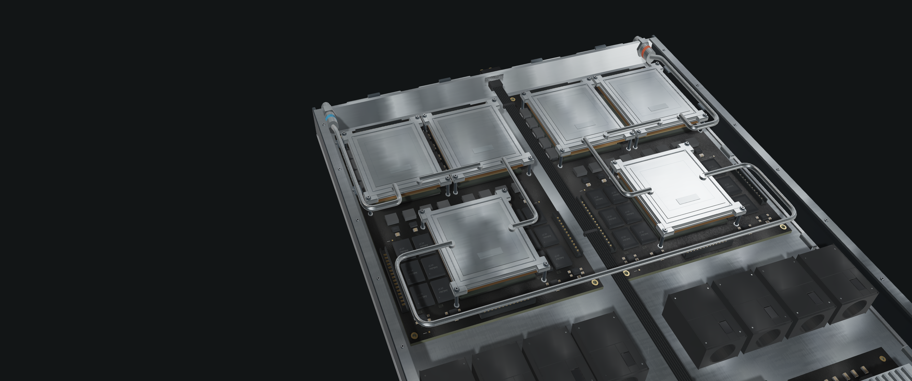
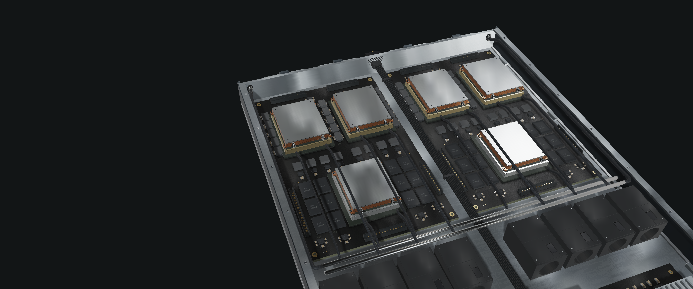
Controlled camera comparison · progress 0.31
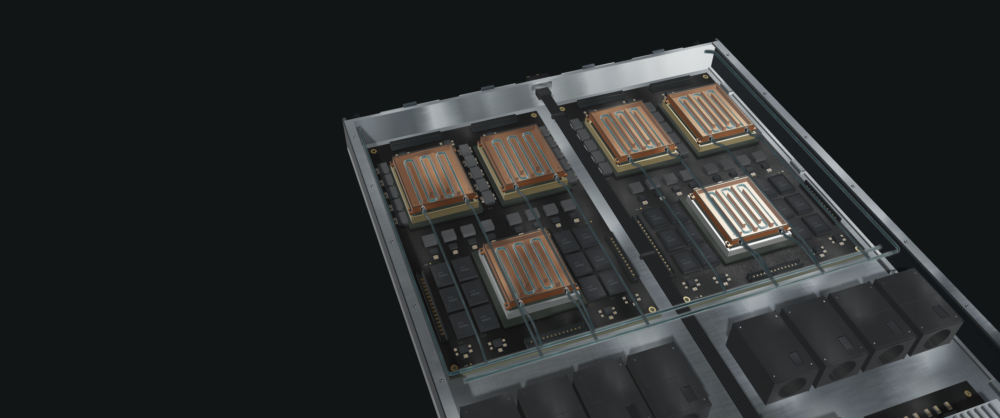
Controlled camera comparison · progress 0.32
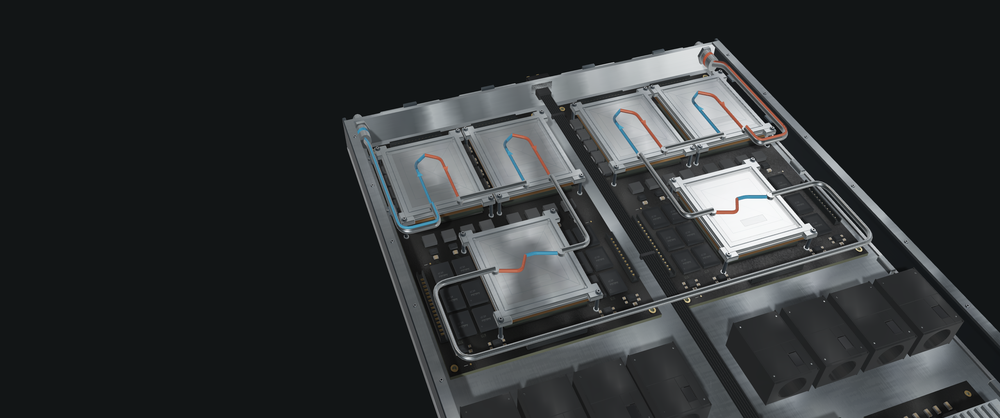
Controlled camera comparison · progress 0.35
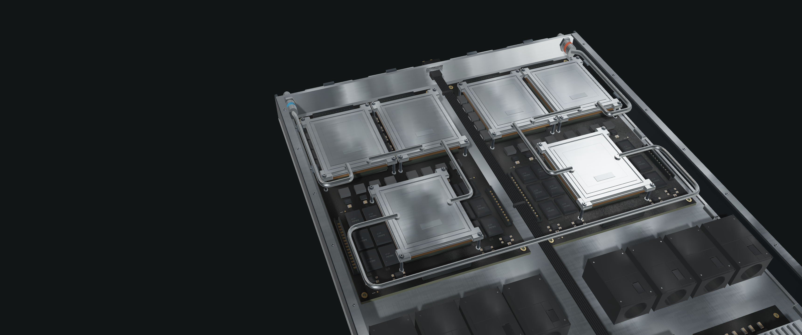
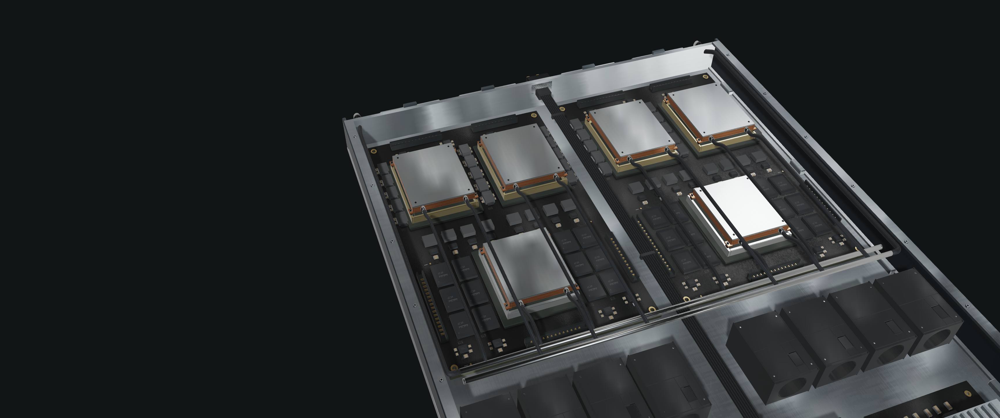
Context only · not a controlled camera comparison · progress 0.39
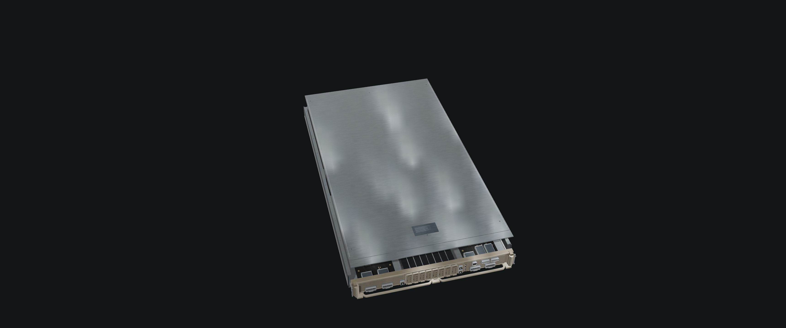
Controlled camera comparison · progress 0.412
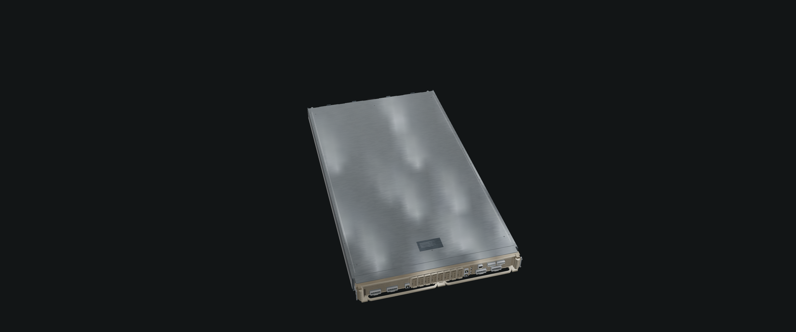
Controlled camera comparison · progress 0.723
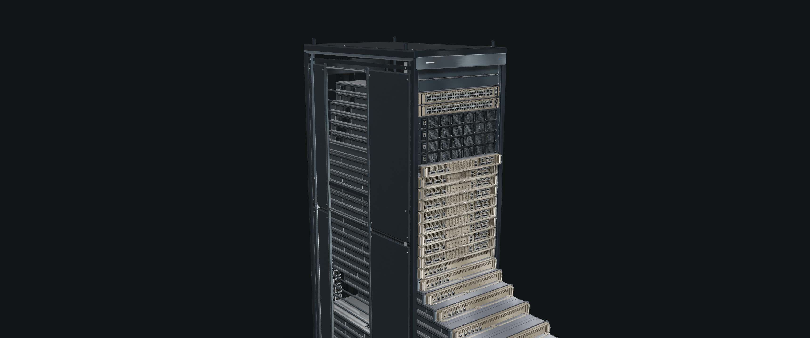
Controlled camera comparison · progress 0.354
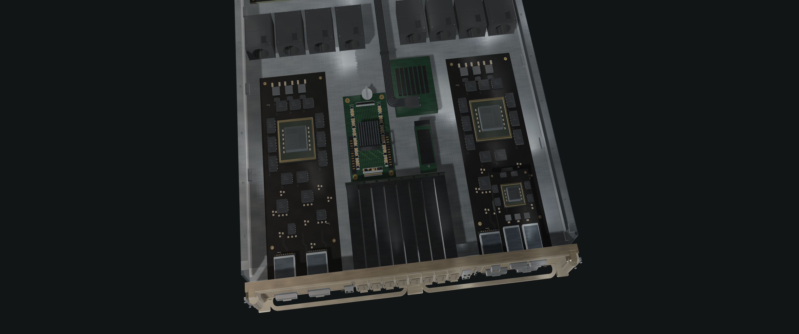
Controlled camera comparison · progress 0.354
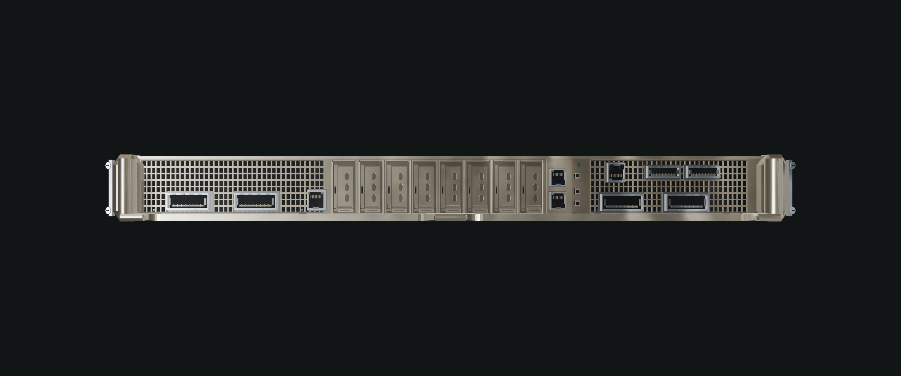
Context only · not a controlled camera comparison · progress 0.263
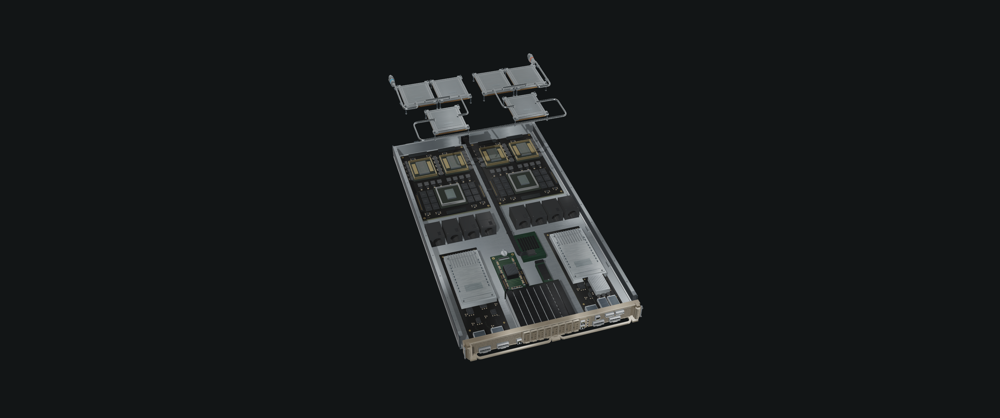
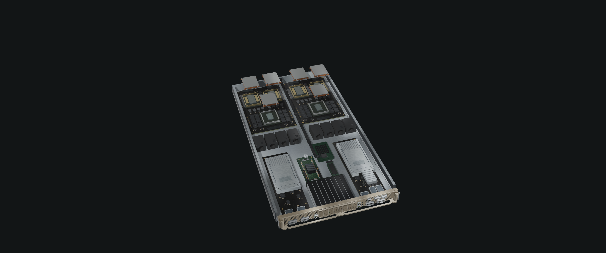
Context only · not a controlled camera comparison · progress 0.31
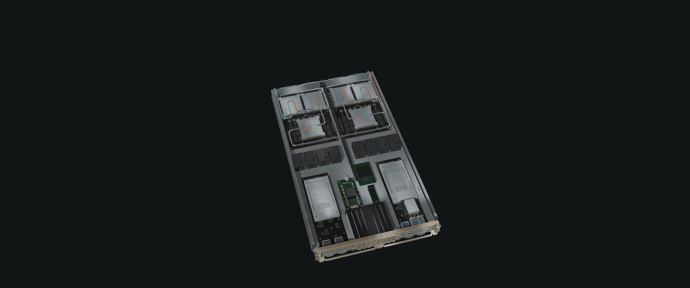
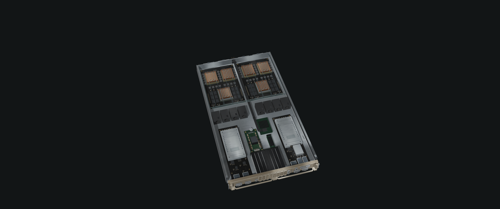
Context only · not a controlled camera comparison · progress 0.35
Context only · not a controlled camera comparison · progress 0.35
Context only · not a controlled camera comparison · progress 0.35
Resource hashes and actual draw evidence. Visual acceptance is independent of automated pass status.